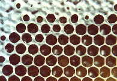
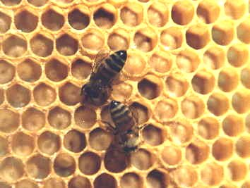
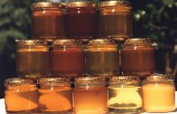
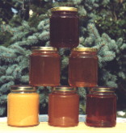

Il miele è la sostanza alimentare che le api producono partendo dal nettare dei fiori o dalle secrezioni di parti vive di piante, che esse raccolgono, trasformano, combinano con sostanze proprie e depongono nei loro favi. Avvengono numerosi scambi da un’ape all’altra, all’interno dell’alveare, che consentono una graduale maturazione ed arricchimento di enzimi che derivano dalle secrezioni ghiandolari delle api stesse.
I componenti principali del miele sono zuccheri, acqua, acidi organici, sali minerali, enzimi, ed altri. Il miele è un alimento di elevato valore nutritivo, facilmente assimilabile. Il glucosio fornisce energia di immediato utilizzo, il fruttosio è metabolizzato a livello epatico e costituisce una riserva energetica. Cento grammi di miele forniscono 320 calorie.
La cristallizzazione è un processo naturale che dipende principalmente dalla composizione e dalla temperatura. Se il contenuto di glucosio è elevato sarà più rapida. Solo pochi tipi di miele non cristallizzano. E’ opinione diffusa dalla medicina popolare attribuire particolari proprietà ai mieli monoflorali, generalmente le stesse che vengono riconosciute alle piante da cui derivano, anche se non è scientificamente provato. Ad ogni modo, indipendentemente dall’origine floreale, la componente enzimatica ed aromatica del miele può contribuire ad alleviare i sintomi di alcune patologie.
I principali tipi di miele prodotti nella zona del Veneto orientale sono:
il Taràssaco, l’Acacia, il Millefiori, il Tiglio, il Girasole ed il miele di Melata. La melata è la secrezione prodotta dal metabolismo di afidi, ed altri piccoli insetti, e deriva dalla linfa delle foglie di varie piante della quale si nutrono. Il miele è un prodotto alimentare e deve essere lavorato con la massima cura, seguendo la metodologia HACCP per il controllo della produzione. Si consiglia di utilizzarlo preferibilmente entro due anni dalla data di produzione.